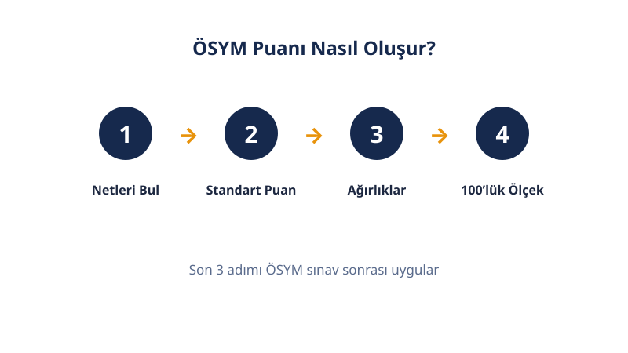

Lisansüstü
DGS Puan Hesaplama
Tahmini DGS-SAY, DGS-SÖZ ve DGS-EA puanların burada: sayısal ve sözel netlerini gir, diploma ortalamanı ekle. ÖBP ve kırık ÖBP dahil, resmi Tablo-A katsayılarıyla hesaplanır.
Son güncelleme: 18 Ekim 2026 · Yazar: PuanRobotu Editör Ekibi
DGS Puan Hesaplama Aracı
Her bölüm için doğru-yanlış sayılarını ve diploma ortalamanı gir.
| Puan Türü | Tahmini Puan |
|---|---|
| DGS-SAY (Sayısal) | — |
| DGS-SÖZ (Sözel) | — |
| DGS-EA (Eşit Ağırlık) | — |
Öne Çıkanlar
- Net = Doğru − Yanlış/4 (her bölüm kendi içinde; 4 yanlış 1 doğruyu götürür).
- Resmi katsayılar: SAY 3/0,6/0,6 · SÖZ 0,6/3/0,6 · EA 1,8/1,8/0,6 (+ 0,6 × ÖBP).
- ÖBP = diploma ortalaması × 0,8 (40–80 arası); kırık ÖBP'de katsayı 0,45 olur.
- Her iki testten de en az 1 net şarttır, yoksa puan hesaplanmaz.
- DGS puanı 100 üzerinden değildir; tipik bant 150–350 arasıdır.
- Bu sayfadaki sonuç tahmindir: gerçek standart puanlar o yılın istatistiğine bağlıdır.
DGS Nedir?
DGS (Dikey Geçiş Sınavı), ön lisans mezunlarının lisans programlarına geçişini sağlayan ÖSYM sınavıdır. Tek oturumda yapılır: 50 sayısal + 50 sözel olmak üzere 100 soru, 135 dakika. Sonuç, üç ayrı puan türü (SAY, SÖZ, EA) olarak hesaplanır ve yalnızca o yılın yerleştirmesinde kullanılır.
DGS Puanı Nasıl Hesaplanır?
Hesaplama üç adımda ilerler:
1. Net: Her bölüm kendi içinde değerlendirilir: Net = Doğru − Yanlış/4. Yani 4 yanlış 1 doğruyu götürür; yanlışlar yalnızca kendi bölümünün netini düşürür — sayısal yanlışlar sözel doğruları yemez. Boşlar etki etmez.
2. Standart puan: Her bölümün neti, ortalaması 50 ve standart sapması 10 olan standart puana (SP) çevrilir.
3. Ağırlıklı toplam (ÖSYM DGS kılavuzu Tablo-A'daki resmi katsayılar):
- DGS-SAY = 3 × Sayısal SP + 0,6 × Sözel SP + 0,6 × ÖBP
- DGS-SÖZ = 0,6 × Sayısal SP + 3 × Sözel SP + 0,6 × ÖBP
- DGS-EA = 1,8 × Sayısal SP + 1,8 × Sözel SP + 0,6 × ÖBP
ÖBP (Ön lisans Başarı Puanı) = diploma not ortalaman × 0,8. 50'nin altındaki ortalamalar 50 sayılır; bu yüzden ÖBP 40 ile 80 arasında olur. Dikkat: bu, lisedeki "diploma × 5" formülü değildir — bazı siteler iki sınavın formülünü karıştırır.
İki kritik fark: DGS'de KPSS ve ALES'teki gibi 100'lük ölçeğe dönüşüm yoktur — puan doğrudan ağırlıklı toplamdır, tipik bant 150–350 arasıdır. Ve her iki testten de en az 1 net yapılmazsa hiçbir puan türü hesaplanmaz.
Formül ve Çalışılmış Örnek
Sayısalda 30 doğru 5 yanlış, sözelde 28 doğru 4 yanlış yapan; diploma ortalaması 85 olan bir aday:

- Sayısal net = 30 − 5/4 = 28,75; Sözel net = 28 − 4/4 = 27
- ÖBP = 85 × 0,8 = 68
- Tahmini standart puanlar: Sayısal 57,5 — Sözel 54
- DGS-SAY ≈ 245,70 · DGS-SÖZ ≈ 237,30 · DGS-EA ≈ 241,50 (tahmini)
Hesaplayıcı Nasıl Kullanılır?
- Sayısal doğru ve yanlış sayılarını gir.
- Sözel doğru ve yanlış sayılarını gir.
- Diploma ortalamanı (100'lük) gir.
- Geçen yıl DGS ile yerleştiysen Kırık ÖBP seçeneğini işaretle.
- Hesapla düğmesine bas: üç puan türü anında görünür.
Sonucunu Oku: Puan Türleri
| Puan Türü | Ağırlık Merkezi | Hedef Bölümler |
|---|---|---|
| DGS-SAY | Sayısal ×3 | Mühendislik, mimarlık, fen bölümleri |
| DGS-SÖZ | Sözel ×3 | İletişim, edebiyat, sosyal bölümler |
| DGS-EA | İkisi ×1,8 | İşletme, iktisat, yönetim bölümleri |
Hedefin mühendislikse sayısal nete yüklen: SAY'da sayısalın katsayısı 3, sözelin katkısı yanında küçük kalır. Bölümünün hangi puan türüyle aldığını tercih kılavuzundan kontrol et.
Kırık ÖBP Kaç Nete Mal Olur?
Bir önceki yıl DGS ile yerleşen adayda ÖBP katsayısı 0,6 yerine 0,45 uygulanır. ÖBP'si 68 olan adayda fark: 0,15 × 68 = 10,2 puan kayıp. Bu kayıp net diline çevrilirse: DGS-SAY'da yaklaşık 1,7 sayısal net, DGS-EA'da yaklaşık 2,8 net demektir. Yeniden girmeye karar verirken bu kaybı net hedefine ekle — geçen yılki netini aynen tekrarlarsan puanın düşer.
Neden Aynı Net Farklı Puan Getirir?
Standart puan, netinin o yılki aday kitlesine göre nerede durduğunu ölçer: SP = 50 + 10 × (net − ortalama) / standart sapma. Sınav kolaysa ortalama yükselir, aynı net daha düşük SP getirir; zorsa tersi olur. Bu yüzden iki farklı yılın 30 neti aynı puanı vermez — ve bu yüzden hiçbir hesaplayıcı kesin sonuç veremez, yalnızca tahmin eder. Bu sayfadaki model, yayımlanmış gerçek verilere dayalı şeffaf bir doğrusal yaklaşımdır: SP(net) = 50 + 2 × (net − 25).
Bu Tahmin Nasıl Hesaplanıyor? (Şeffaflık)
- Arif Hoca'nın DGS hukuk analizi: iyi ÖBP'li (≈70) bir adayda 75–76 toplam net ≈ 315–316 EA puanı getirmiştir. Modelimiz aynı senaryoda EA 313,8 üretir — tutarlı.
- 2026 DGS taban puanları: örneğin Bilgisayar Mühendisliği SAY taban 316,69, modelimizde ≈76 net bandına denk gelir — tutarlı.
1 Yanlış Kaç Puana Mal Olur?
1 yanlış, netini 0,25 düşürür. Standart puan diliminde bu ≈0,5 SP eder. Katsayılarla çarpılınca: sayısal testteki 1 yanlış DGS-SAY'da ≈1,5 puan, DGS-EA'da ≈0,9 puan götürür. Emin olmadığın soruda boş bırakmak, rastgele işaretlemekten güvenlidir — özellikle SAY hedefliyorsan.
Sınırlamalar
- DGS puanı yalnızca girdiğin yılın yerleştirmesinde geçerlidir; ertesi yıl kullanamazsın. ALES'in 5 yıllık geçerliliğinden en büyük farkı budur.
- Format değişti: 2025'ten beri sınav 100 soru / 135 dakikadır; öncesinde 120 soru / 150 dakikaydı. Eski dönemin "şu net şu puan" tabloları yeni formata birebir uymaz.
- İnternetteki bazı formüller yanlıştır: YGS'li hesaplar (YGS 2018'de kalktı), "doğru başına 2 puan" iddiaları ve lisedeki "diploma × 5" formülünün DGS'ye uygulanması — üçü de hatalıdır.
- Standart puanlar o yılın istatistiğine bağlı olduğu için bu araç tahmin verir; kesin sonuç ÖSYM sonuç belgesindedir.
DGS mi ALES mi?
| Ölçüt | DGS | ALES |
|---|---|---|
| Hedef | Ön lisans → lisans geçişi | Yüksek lisans / doktora / akademik kadro |
| Soru | 100 (50+50) | 100 (50+50) |
| Yanlış cezası | Var (4Y = 1D) | Var (4Y = 1D) |
| Ek puan | ÖBP (diploma × 0,8) | Yok |
| Ölçek | 150–350 bandı, dönüşüm yok | 100'lük ölçek (70+30) |
| Geçerlilik | Yalnızca o yıl | 5 yıl |
Lisansüstü hedefin için ALES puan hesaplama aracını, dil puanı için YDS puan hesaplama aracını kullanabilirsin.


Sık Sorulan Sorular
DGS puanı nasıl hesaplanır?
Önce her bölümün neti bulunur (Doğru − Yanlış/4), netler standart puana çevrilir. Sonra resmi katsayılarla toplanır: SAY = 3×SayısalSP + 0,6×SözelSP + 0,6×ÖBP; SÖZ = 0,6×SayısalSP + 3×SözelSP + 0,6×ÖBP; EA = 1,8×SayısalSP + 1,8×SözelSP + 0,6×ÖBP. 100'lük ölçeğe dönüşüm yoktur.
DGS'de yanlış doğruyu götürür mü?
Evet. Her 4 yanlış 1 doğruyu götürür (Net = Doğru − Yanlış/4). Yanlışlar yalnızca kendi bölümünün netini düşürür; sayısal yanlışlar sözel doğruları yemez. 1 yanlış, netini 0,25 düşürür — bu da DGS-SAY'da yaklaşık 1,5 puana mal olur. Boş bırakmak, emin olmadığın soruda işaretlemekten güvenlidir.
ÖBP nedir, nasıl hesaplanır?
Ön lisans Başarı Puanı = diploma not ortalaması × 0,8. 50'nin altındaki ortalamalar 50 sayılır, bu yüzden ÖBP 40 ile 80 arasında olur. Not: bu, lisedeki 'diploma × 5' formülü değildir; DGS ÖBP'si ön lisans ortalamanı kullanır. Bazı siteler bu iki formülü karıştırır.
Kırık ÖBP nedir?
Bir önceki yıl DGS ile bir programa yerleşen adaylarda ÖBP katsayısı 0,6 yerine 0,45 uygulanır. ÖBP'si 68 olan adayda bu 10,2 puan kayıp demektir — SAY'da yaklaşık 1,7 sayısal nete, EA'da yaklaşık 2,8 nete eşdeğerdir. Yeniden girerken bu kaybı net hedefine ekle.
Her iki testten de net yapmak zorunda mıyım?
Evet. ÖSYM kuralına göre sayısal ve sözel testlerin her birinden en az 1 net yapılmazsa hiçbir puan türü hesaplanmaz — sonuç belgende puan görünmez. Sıfır netli test, diğer testteki yüksek neti de geçersiz kılar. Bu yüzden zayıf olduğun bölümü tamamen boş bırakma.
DGS puanı neden 100 üzerinden değil?
DGS'de KPSS ve ALES'teki gibi 100'lük ölçeğe dönüşüm yoktur; puan, standart puanların katsayılarla doğrudan ağırlıklı toplamıdır. Tipik puan bandı 150–350 arasıdır. Bazı siteler 100 üzerinden sahte formüller yazar; resmi kılavuzdaki Tablo-A katsayıları tek doğru kaynaktır. Bu yüzden DGS puanını KPSS puanıyla kıyaslama.
DGS puanım kaç yıl geçerli?
Yalnızca girdiğin yılın yerleştirmesinde geçerlidir; ertesi yıl kullanamazsın. Bu, ALES'in 5 yıllık geçerliliğinden en büyük farkıdır. Yeniden girmek istersen kırık ÖBP cezası (0,45 katsayı) uygulanır; bu yüzden 'seneye kullanırım' planı DGS'de işlemez. Kararını verirken bu iki maliyeti birlikte hesapla: ceza puanı ve bir yıllık bekleme.
Eski DGS net tabloları hâlâ geçerli mi?
2025'ten beri sınav 100 soru ve 135 dakikadır; öncesinde 120 soru ve 150 dakikaydı. Eski döneme ait 'şu net şu puan' tabloları yeni formata birebir uymaz, çünkü net dağılımı ve standart puanlar değişti. Eski kaynaklardaki YGS'li veya 120 soruluk formülleri görmezden gel.